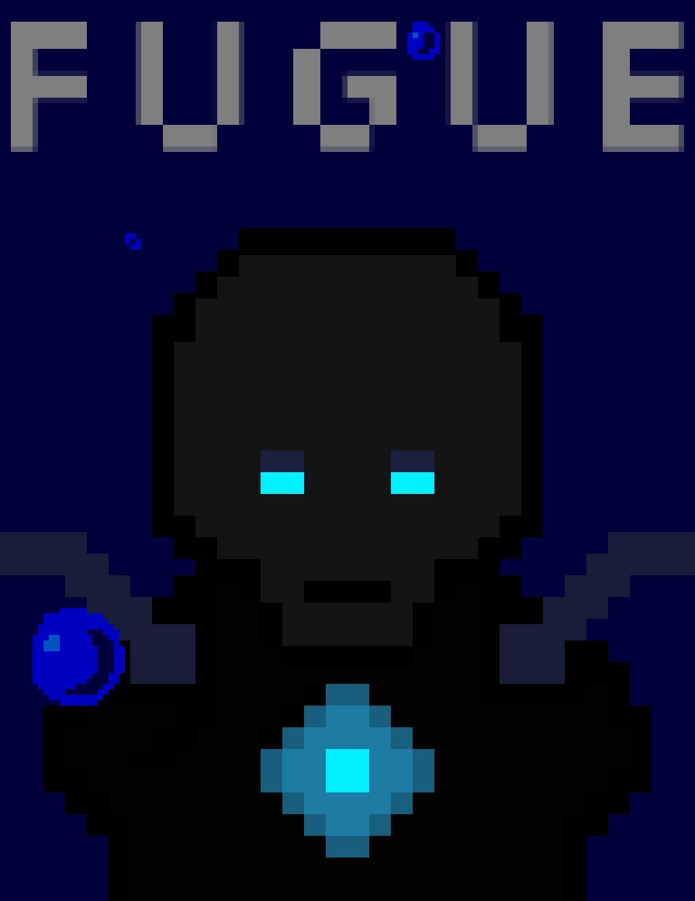

Greetings!

Feel free to contact us at any time. For information regarding our latest game, check out our blog on the button up above!
Cheers!
-Gallium
Fugue is a deep, captivating rpg adventure into the last bastion of humanity, a desert island surrounded by the Ocean that consumed the world. You play the role of an automaton desperately searching for his lost humanity, interacting with and fighting the often animalistic rulers of the dystopian wasteland.
Gameplay focuses on utilizing the powers of defeated warlords, stealing their transformations for yourself, and using your newfound powers to bring order to the badlands of the island and peace to the fugue state of your mind. This is FUGUE.
